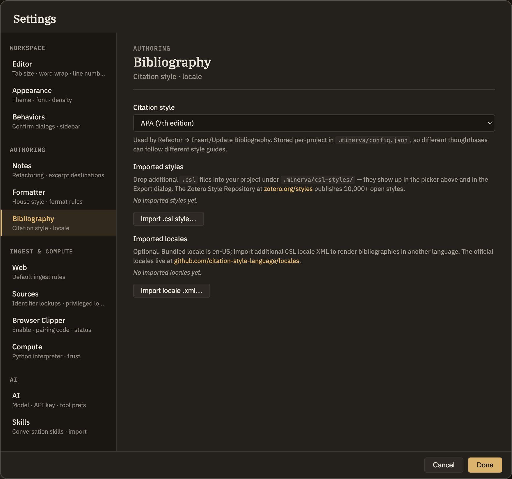

Docs/Export/Bibliography & citations
Bibliography & citations
When you cite sources in your notes, Minerva can hand your citations off to other reference and writing tools, and let you choose the style your citations appear in.
Export a reference list
Minerva can gather every source you've cited and save it as a standard reference list that most citation managers and academic writing tools can open. Each source becomes one entry with a short, readable citation key like smith-2020-functions. You choose how much to include: a single note, a folder, or your whole project.
Export for Word, PDF, and beyond
If you want a finished document in Word, PDF, or another format, Minerva can export a note together with its citations and a matching reference file, ready to convert with a document-conversion tool of your choice. It comes with clear step-by-step instructions and uses the citation style you've picked.
Choose your citation style
Minerva formats your citations in whatever style you prefer, and the same choice applies everywhere your citations appear.
